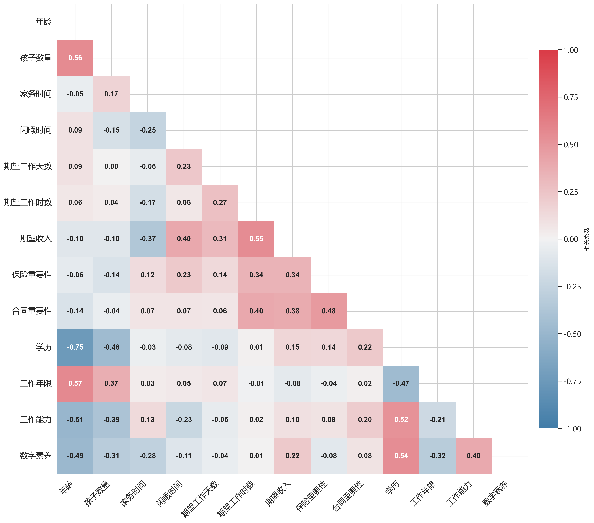

基于300个农村女性样本的调查数据，进行全面的描述性统计分析。 数据涵盖基本信息、工作意愿、工作能力等多个维度，为后续模型提供empirical基础。

图1：核心连续变量的Pearson相关系数热力图（带注释版本）
样本平均年龄为36.98岁（标准差6.07岁）， 平均有1.57个孩子。 被调查者每天平均花费6.83小时进行家务劳动， 拥有7.62小时的闲暇时间。 在就业期望方面，平均期望每周工作5.22天， 每天8.04小时， 期望月收入为4520.77元（范围1400-8000元）。
在人力资本维度，样本平均累计工作年限为7.97年， 学历平均为3.53（0-6分制，相当于高中至大专水平）。 工作能力平均评分为25.02分（满分48分）， 数字素养平均评分为8.62分（满分20分）， 表明数字技能仍有较大提升空间。
在工作权益认知方面，被调查者对工作保险和劳动合同的重要性评分分别为 1.95分和 2.16分（0-3分制）， 显示出较高的劳动权益保护意识。
地区分布： 样本主要分布在西部地区（31.00%）和中部地区（30.33%）， 东部地区占21.67%，东北地区占15.33%，港澳台及国外占1.67%。
工作意愿： 76.67%的被调查者希望工作，其中80.87%倾向于全职工作，19.13%偏好兼职。 在工作方式偏好上，17.83%希望线上工作，82.17%偏好线下工作， 显示农村女性对传统线下工作模式的偏好较强。
工作经历： 92.33%的被调查者有工作经历，仅7.67%从未工作过， 表明农村女性整体具备一定的劳动力市场参与经验。